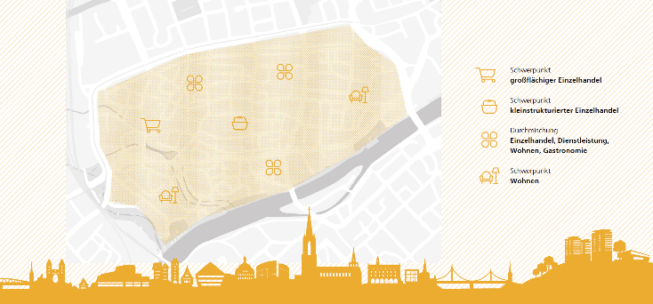

Handel, Innenstadt und Tourismus¶
Das Herz unserer Städte bilden seit jeher die Innenstädte als Wirtschafts-, Wohn-, Unterhaltungs- und insbesondere Begegnungsraum unterschiedlicher Berufsstände, sozialer Klassen und Kulturen. Gleichzeitig sind sie Spiegel und Brennglas der urbanen Entwicklung in der sich auch die Ulmer Ziele der Stadt im Wandel, Wachstum und die Notwendigkeit zum nachhaltigen Handeln und Klimaschutz deutlich abbilden.
Die nachfolgend formulierten Erkenntnisse und Leitlinien zum digitalen Wandel basieren im Wesentlichen auf dem Material des Innenstadtdialogs aus dem Jahr 2020 1 sowie auf dem Innenstadtkonzept 2010 der Abteilung Stadtplanung, Umwelt und Baurecht der Stadt Ulm (SUB).2 Die enge und seit längerem bestehende Zusammenarbeit von Innenstadtdialog und der Digitalen Agenda zeigt in diesem Themenspektrum deutlich auf, dass digitale Lösungen ihren großen Nutzen entfalten, wenn sie auf Fragestellungen, Themen oder Konflikten aufsetzen, die andere Akteure außerhalb der digitalen Fachwelt auf die Tagesordnung gebracht haben.
Der Innenstadtdialog ist Stadtentwicklung Bottom-up. Seit 2019 arbeiten viele Stakeholder aus Wirtschaft, Kultur und Naturschutz mit Anwohner*innen und Vertretern des Gemeinderats an Ideen, wie die Ulmer Innenstadt attraktiver und zukunftsfähiger sein könnte. Handel, Gastronomie, Dienstleistungen, Tourismus, Kultur und Wohnen bleiben auch in Zukunft die wichtigen Nutzungen der Innenstadt. Durch die Digitalisierung von Wirtschaft und Gesellschaft ist aber der Nutzungsmix klar im Wandel. Einkaufen geht immer mehr im Netz, arbeiten geht auch von zu Hause oder überall, wo leistungsfähiges Internet angeboten wird. Öffentliche Räume einschließlich der Donau sind die Orte, wo sich Menschen begegnen, sich erholen und Feste gefeiert werden. Oder eben am Laptop arbeiten. Es liegt auf der Hand, dass das urbane Miteinander nicht ohne Konflikte ist. Erste Maßnahmenpakete des Innenstadtdialogs für den öffentlichen Raum, den Wirtschaftsstandort Innenstadt und Wohnen, hatte der Ulmer Gemeinderat 2020 beschlossen. 3
Das Innenstadtkonzept wurde bereits vor 10 Jahren vom Fachbereichsausschuss Stadtentwicklung Bau und Umwelt beschlossen. Zahlreiche Projektvorschläge des Innenstadtkonzeptes konnten inzwischen von der Stadt oder von privaten Investoren realisiert werden.
Die Smart City, d.h. die intelligente Stadt, soll heute nachhaltig, intelligent vernetzt und insbesondere lebenswert für ihre Bürgerinnen und Bürger sein. Viele Jahrzehnte lang stand die Kommerzialisierung der Innenstädte mit Ladenmeilen, Warenhäusern und dem Fortschritt durch Technik, z.B. als Autostadt, im Zentrum der urbanen Planung. Noch vor wenigen Jahrzehnten war der Ulmer Münsterplatz ein riesiger Parkplatz. Die Innenstadt der Zukunft wird sich davon wesentlich unterscheiden. Intelligent eingesetzte Technologie und die Verwertung von Daten werden ein Vehikel der Transformation und wichtiger Bestandteil einer Lösung sein – jedoch kein Selbstzweck.
Während die Folgen des coronabedingten Lockdowns noch nicht abschließend absehbar sind, befindet sich die Ulmer Innenstadt grundsätzlich in einer guten Ausgangslage. Als Oberzentrum besitzt Ulm ein sehr großes regionales Einzugsgebiet. Als Innovations- und Wirtschaftsstandort verfügen die Bürgerinnen und Bürger zudem über ein überdurchschnittlich hohes Nettoeinkommen. Dies spiegelt sich auch in der bisher niedrigen Verfügbarkeit von Ladenlokalen wieder: Durchschnittlich nur rund 2–4 % der Ladenlokale und Gastronomie in der Innenstadt standen im 2019 für eine neue Nutzung zur Verfügung. 4
Die 1a- , d.h. die Top-Lagen, vor allem in der Hirsch -und Bahnhofsstraße, sind etwa zur Hälfte mit Textil- und Schuhhandel und zu rund 10 % von Technik und Elektro besetzt, viele davon großflächige Einzelhändlerinnen und -händler. 5 Diese werden gut durch das Angebot der Seiten- und Randlagen ergänzt, die zusammengenommen einen guten, wertig diversifizierten Branchenmix ergeben.
Eine besondere Stärke ist daher – auch gegenüber möglichen Onlineangeboten und konkurrierenden Städten – die Kleinteiligkeit und Vielfältigkeit der Innenstadt, insbesondere in den 1b- und 1c-Lagen wie der Wengengasse, Walfischgasse, Sterngasse oder Herrenkellergasse. Die Innenstadt bietet viel spezialisierten und oft inhabergeführten Einzelhandel und ein breites Angebot an Gastronomie. Die gute Durchmischung des Handels und damit angezogene Besucherströme machen die Innenstadt auch zu einem attraktiven Standort für die Gastronomie. Gleichzeitig wird die Ansiedlung von Wohnraum forciert. Eine Regulierung des großflächigen Einzelhandels wurde bisher von der Stadt und dem zuständigen Regierungspräsidium erfolgreich auf Grundlage des Innenstadtkonzepts 2010–20 gesteuert.
Als Tor zur Innenstadt wurden auf dem Standort des ehemaligen Geburtshauses Einsteins im Sommer 2020 die Sedelhöfe als Innenstadt-Einkaufszentrum direkt am Bahnhof eröffnet. Hier geht Onlinehandel bereits in beide Richtungen: Als stationärer Baustein seiner Verkaufsstrategie hat der Onlinehandel Zalando dort ein Outlet eröffnet.
Hinzu kommt, dass mit der Fertigstellung der Hochgeschwindigkeitsbahnstrecke Stuttgart 21 die Anbindung an die Metropol- und Wirtschaftsregion Stuttgart und den internationalen Flughafen in den nächsten Jahren enorm verbessert wird. Mögliche Auswirkungen sind aber auch der Abfluss von Kunden nach Stuttgart und jedoch auch Mietpreissteigerungen für Ulm als Wohn- und Bürostandort. Mit Sicht auf die Durchmischung und guten Voraussetzungen der Stadt sieht die Branchenstudie „What’s Next Highstreet“ die Ulmer Bahnhofs- und Hirschstraße als aufstrebenden Stern unter den deutschen Einkaufsstraßen. 6
Darüber hinaus ist Ulm Anziehungspunkt für Reisende. Mit rund 970.000 Übernachtungen und 6 Millionen Tagessausflugreisenden in Ulm und Neu-Ulm (2019) 7 sind Ulmer Münster und die historische Altstadt mit dem Fischerviertel wichtigste Anziehungspunkte für Gäste. Hinzu kommen überregionale und internationale Radlerinnen und Radler durch Fernradwege wie den Donauradweg sowie internationale Gäste des Schwörwochenendes, des Ulmer Weihnachtsmarkts oder der berühmten Eiszeitskulptur des Löwenmenschen. Der überwiegende Teil, d.h. rund 70 % der Übernachtungen, geht jedoch auf Geschäfts- und Kongressreisende zurück. 8
Herausfoderungen¶
Das enorme und ungebremste Wachstum des Onlinehandels ist bezeichnend für die veränderten Anforderungen und Ansprüche, die heute mit dem Einkaufen einhergehen. Viele stationäre Einzelhändlerinnen und -händler, insbesondere aus Branchen mit gut vergleichbaren Massenprodukten und austauschbaren Einkaufskonzepten wie Fashion, Schuhe und Elektronik finden sich heute im direkten Preiskampf mit den Onlineplattformen wieder. Rund 30 % der Läden der Ulmer Innenstadt werden durch diese Branchen belegt. 9 Wer die Ursache des Erfolgs des Onlinehandels jedoch allein bei vermeintlich günstigeren Preisen sucht, verkennt den eigentlichen Kulturwandel. Der tatsächliche Erfolg der Onlineplattformen wie Amazon oder Zalando liegt vielmehr in der absoluten Kundenorientierung mit einfachen, niederschwelligen und komfortablen Einkaufs-, Retour- und Bezahlprozessen.
Zur Wahrheit dieses Kultur- und Strukturwandels gehört aber auch, dass wir das Einkaufserlebnis und entsprechende Konzepte neu denken werden müssen. Der Einzelhandel ist nicht länger nur Versorger, sondern wird zum Dienstleister. Besitz zu erwerben wird teilweise – wie beim Carsharing – in den Hintergrund rücken. Kollaborative und Sharing- Konzepte und Plattformen, bei denen das Silberbesteck oder der Rasenmäher beim Hersteller künftig geliehen und im Showroom abgeholt werden kann, nehmen zu. 10 Austauschbare Einkaufskonzepte mit vergleichbarer Massenware, insbesondere im Bereich Kleidung, Textil und Elektronik werden abnehmen.
Technologie wie Beacons, d.h. kleine Bluetooth-Sender zur Datenübermittlung und Datenanalysen werden uns beim Einkauf mit maßgeschneiderten Angeboten vor Ort unterstützen und uns auf die Abendvorstellung unseres Lieblingscomedian nach dem Essen im Restaurant um die Ecke aufmerksam machen. Der Einsatz von Augmented Reality, d.h. die Ergänzung der Realität mit digitalen Inhalten, wird deutlich zunehmen, z.B. bei der digitalen Anprobe von Kleidern oder Schuhen. 11
Tatsächlich scheint es vielen Betrieben und Händlerinnen und Händlern beim Thema Digitalisierung noch an nötiger Expertise, Kapazität und auch an Verständnis hinsichtlich der Vorteile zu fehlen. Eine Aufgabe des Digitalisierungszentrums oder Digital Hubs im Verschwörhaus ist es, Händlerinnen und Händler und mittelständige Unternehmen bei diesen Bemühungen zu unterstützen und zu beraten. Der Wirtschaftsverein Ulmer City Marketing bietet seinen Mitgliedern u.a. die Suchmaschinenoptimierung oder Entwicklung digitaler Vertriebskanäle an. Allerdings werden diese Beratungsangebote oftmals nur zögerlich vom Einzelhandel aufgegriffen. 12 Dies mag einerseits in begrenzten Ressourcen begründet liegen. Andererseits zeigt dies auch, dass uns vielerorts noch ein Kulturwandel bevorsteht. Ziel muss es sein, die Vorteile, Chancen und Notwendigkeit dieses Wandels zu vermitteln und niederschwellig zugänglich zu machen.
Beim Tourismus bleibt die Geburtsstadt Albert Einsteins, die ein breites kulturelles Angebot bietet und steigende Übernachtungszahlen verbucht 13 , hinter ihrem touristischen Potenzial zurück. Wesentliche Zielgruppe waren bisher – mit rund 70 % der Übernachtungen – Kongress- und Geschäftsreisende, die im Schnitt weniger als zwei Nächte in der Stadt verbringen. 14 Die verbleibenden Übernachtungen sind klassischem Städtetourismus und Besucher*innen von Kulturevents zuzuordnen, insbesondere in den Monaten Mai bis September und während des Ulmer Weihnachtsmarkts. Hinzu kommen Städte- und Durchreisende, welche i.d.R. die Nähe zur Autobahn für einen Zwischenstopp nutzen. Durch die Corona-Pandemie sind nachfrageorientierte Aktivangebote im Bereich Radtourismus, Wandern und Sport entstanden oder wurden werblich stärker herausgestellt. Die Gästestruktur ist derzeit einem Wandel unterworfen, was aktuell durch eine touristische Marktforschungsstudie für Ulm genauer analysiert werden soll. Für die Zukunft wird unter anderem von Relevanz sein, die Anforderungen der Touristinnen und Touristen, z.B. bei der Navigation durch die Stadt oder in Form eines Willkommens-Zentrums am Bahnhof, stärker zu berücksichtigen und in Konzepten mitzudenken.
Die große Herausforderung Ulms wird darin bestehen, mit der Entwicklung neuer Konzepte und Strategien die Einbindung von Technologie, Datenplattformen und den Auf- und Ausbau umfassender Kooperationen voranzutreiben, um zukunftsfähig zu werden und wettbewerbsfähig zu bleiben. Mit einem neuen Ulmer Touristik Konzept wird die Chance zur Einbindung des vernetzten digitales Angebots einhergehen, z.B. bei der Bereitstellung übergreifender Informationen auf digitalen Plattformen.
Ziele¶
Einkaufserlebnis mit absolutem Kundenfokus
Die Verinnerlichung des „Customer Journey“, d.h. die absolute Ausrichtung nach den Bedürfnissen der Kundschaft, Gästen und Bewohnerinnen und Bewohnern wird ausschlaggebend für einen erfolgreichen Wandel sein. Dieser beginnt mit Selbstverständlichkeiten wie dem bargeldlosen Bezahlen, der digitalen Auffindbarkeit, z.B. in Suchplattformen, in Online/Offlineangeboten und entfaltet sich nicht zuletzt in einem freundlichen und kompetenten Service vor Ort.
Die Grundlage wird durch Online-Sichtbarkeit und Auffindbarkeit geschaffen: Die Zukunft des Einzelhandels wird in hybriden Ansätzen, d.h. in der Kombination aus Online- und Offlineformaten liegen. Nichts ist enttäuschender, als die Fahrt in die Stadt auf sich zu nehmen und dann doch mit leeren Händen heimzukehren. In der Regel fehlt dem stationären Einzelhandel und Warensortiment noch die Online-Auffindbarkeit – sozusagen das digitale Schaufenster. Dabei unterscheiden sich die Preise oft nicht wesentlich von Onlineanbietern und es gibt keine Wartezeit auf das Produkt. Für den Handel geht es nicht darum, den Preiswettbewerb zum Onlinehandel zu suchen, sondern vielmehr die Stärken und Vorteile beider Welten zu vereinen und der Kundschaft vor Ort anzubieten.
Das Ulmer City Marketing, ein Zusammenschluss von rund 300 Geschäften, 15 versucht, diese Off/-Online-Lücke bereits zu überbrücken: Mit der App des Ulmer Start-ups „Neighborshopz“ können Sortimente der Händlerinnen und Händler ohne großen Aufwand in die App aufgenommen und dort von Kundinnen und Kunden gefunden werden. Gleichzeitig übernimmt die App die Navigation zum Laden. Perspektivisch wird eine Bezahl- und Versandoption dazukommen. Dieser Ansatz versucht, die Stärken des stationären Handels online zu verankern und künftig durch zusätzliche auf die Kundschaft zugeschnittene Angebote zu ergänzen, jedoch liegt die Herausforderung darin, dass diese Lösung erst in der breiten Teilnahme von Nutzenden greift.
Tatsächlich gibt es zahlreiche Beispiele von spezialisierten Ladengschäften, z.B. aus dem Fahrrad- oder Sporthandel oder einen Heimatladen, deren Onlineverfügbarkeit und Onlinesichtbarkeit des Sortiments bereits Bestandteil der Vertriebsstrategie ist. Jedoch wird der Innenstadthandel seine Stärken vor allem dann ausspielen können, wenn Läden und Gastronomie ihre Online- und Marketingaktivitäten und ihr Storytelling, d.h. Marketing mit Geschichten, bündeln.
Ein erfolgreicher Ansatz für die gemeinsame Markenbildung und die Zusammenarbeit von Händlerinnen und Händlern und Gastronominnen und Gastronomen in der Innenstadt ist das Citygutschein-System, das rund 300 Läden, Gastronomie und Dienstleister umfasst, bei denen der Gutschein eingelöst werden kann. Kundschaft und Verkäuferinnen und Verkäufer profitieren gleichermaßen durch die Standardisierung der Prozesse, Markenbildung und Skalierung, die ein Laden schwer allein erreichen könnte. Bei der Digitalisierung des Gutscheinsystems und der entsprechenden Bezahlprozesse stoßen insbesondere kleine Läden, oftmals wegen technischer Anforderungen, noch an ihre Grenzen. 16 Auch hier wird die Digitalisierung des Gutscheinsystems neue Möglichkeiten zur Vernetzung bieten, z.B. mit Angeboten für Touristinnen und Touristen.
Gemeinsames Innenstadtmarketing und zentrale Bereitstellung von Information:
Ziel muss zum einen sein, die (digitale) Sichtbarkeit und Reichweite, insbesondere des kleinteiligen Einzelhandels und der Gastronomie zu erhöhen. Zum anderen müssen die Alleinstellungsmerkmale der Innenstadt und ihres Angebots kommuniziert werden. Das Storytelling wird in das Zentrum dieser multimedialen Kommunikation rücken. Ein Beispiel für ein Zusammenspiel aus stationärem und Onlinehandel ist die Outletcity Metzingen. Die Artikel von über 50 Outletgeschäften werden dort im zentralen Onlineshop angeboten und versendet und mit gemeinsamen Marketingmaßnahmen unter dem Branding Outletcity Metzingen beworben. 17
Die farbigen Kreise der Kampagne ulm.kommt.rein. sind den meisten Ulmerinnen und Ulmern gut bekannt. 18 Die Gemeinschaftsinitiative ulmerleben.de, welche von der Stadt Ulm unterstützt wird, hat sich die zentrale Bereitstellung relevanter Informationen auf digitalen Plattformen zum ÖPNV, Parken, Events oder Shoppen und bessere Kommunikation und Bewerbung auf die Fahnen geschrieben. Neben der Bündelung relevanter Information und Daten wird hier die Usability, d.h. ein niederschwelliger, einfacher Zugang für die Nutzenden und die Auffindbarkeit des Angebots ausschlaggebend sein.
Lokaler Lieferservice – Brücke zum Onlineangebot: Ein Beispiel für die Kopplung des stationären- und Onlineangebots war die „mein-Wochenmarkt.online“ Initiative 19, wobei einige Stände ein eigenes Onlineangebot vorantreiben. Ziel ist es, das Sortiment auch Kundinnen und Kunden, die nicht am Marktgeschehen teilnehmen können, das Sortiment zur Verfügung zu stellen. Herausforderung ist hier die Lieferung der Produkte, die teilweise in einer Kühlkette stattfinden muss. Insbesondere bei der Logistik bzw. Auslieferung würden sich Aktivitäten ggf. übergreifend für den Markt bündeln lassen.
Ein Ansatz für eine Kooperation in der Gastronomie ist während des ersten Corona-Lockdowns im Frühjahr 2020 entstanden: Die Initiative „Ulm-isst“20, bei der sich mehrere Innenstadtrestaurants in einer gemeinsamen Küche und Lieferdienst- und Webaufritt zusammengeschlossen und so auch eine lokale Alternative zu großen Lieferdiensten geschaffen hatten.
Die Vorteile lokaler Verfügbarkeit und die Herausforderungen einer wachsenden Innenstadtlogistik, der sogenannten letzten Meile, könnte ein Zusammenschluss kleinerer Läden zu einem lokalen und digital koordinierten Liefernetzwerk aufgreifen. Dafür bräuchte es zunächst ein Netzwerk kleinere Lager bzw. Lagerräume als Distributionsorte, wo der Anlieferungsverkehr gebündelt und die Distribution zentral koordiniert würde. Dadurch könnte die Innenstadtlogistik, z.B. in den Altstadtvierteln, verbessert werden. Durch einen gemeinschaftlichen lokalen Lieferdienst der Innenstadtläden könnten Kundinnen und Kunden zudem innerhalb kürzester Zeit beliefert werden.
Die Eventisierung des Einkaufserlebnisses, d.h. die Verknüpfung und Einbettung des Einkaufens in Events, ist ein wesentlicher Baustein zur Stärkung der innenstädtischen Wirtschaft und des Tourismus. Dazu zählt grundsätzlich ein attraktives kulturelles Angebot, Veranstaltungen wie der Ulmer Weihnachmarkt, Sportevents, Konzerte oder Aktionen wie das Berblinger Jahr, welche oftmals in den Handlungsbereich der Stadt fallen. Jedoch wird der Erlebniseinkauf nicht zuletzt im Handel selbst entstehen müssen. Beispielsweise hat ein Handelsunternehmen in Osnabrück eine stehende Welle zum Surfen in ihr neues Sporthaus integriert und mit zehntausenden Besucherinnen und Besuchern eine enorme Reichweite und Anziehungskraft, auch für die umliegende Einkaufsstraße, generiert. 21
Digitalisierung für den Tourismus zielt auf die barrierefreie, nutzerfreundliche und mehrsprachige Bereitstellung von Informationen und auf das Aufenthaltserlebnis ab. So nutzt die städtische Ulm/Neu-Ulm Touristik GmbH (UNT) zur Unterstützung und Ergänzung ihrer Stadtführungen bereits Apps wie Future History oder sQRibe2go. 22 Auch Virtual Reality, also virtuelle Realität, ist für Ulmer Gäste bereits im Einsatz: Mit dem Birdly fliegt man als Ulmer Spatz via Virtual Reality Brille durch das Ulm der 1890er Jahre. 23 In Zukunft wird verstärkt Augmented Reality im Tourismus zum Einsatz kommen, d.h. über Datenbrillen oder Smartphones werden digitale Elemente eingeblendet. Ähnliche Verfahren kennt der TV-Zuschauer bereits von Fußballübertragungen, wo Laufwege, Abstände oder Absatzlinien eingeblendet werden.
Ein wesentliches Handlungsfeld ist der Aufbau eines City-Leitsystems, 24 z.B. mit digitalen Touchscreens am Bahnhof. Stadtpläne, Geschäftslagen, Produkte oder aktuelle Events wären damit gesammelt und barrierefrei für Gäste abrufbar. Auch Menschen mit körperlichen Einschränkungen und Sehbehinderungen könnten so unterstützt werden durch Informationen über barrierefreie Zugänge zu Restaurants, Läden oder Toiletten. Gleichzeitig muss ein digitales Leitsystem für Touristinnen und Touristen etabliert werden. Zusätzliche Informationen über die Verfügbarkeit von (Camper-)Parkplätzen, E-Ladeinfrastruktur für Rad- und Autofahrerinnen- und Fahrer usw. würden das Angebot deutlich aufwerten. Eine Lösung von Morgen wäre die Kombination mit individuellen Daten, bei der künstliche Intelligenz der Besucherin und dem Besucher künftig maßgeschneiderte Vorschläge auf das Smartphone oder die Datenbrille schicken würde, während ein holographischer Tourguide durch die Ulmer Sehenswürdigkeiten führt. Heute wird zunächst die intelligente Vernetzung bestehender Angebote wichtig sein.
Ziel: Raum für Begegnung mit hoher Aufenthaltsqualität
Nur eine Innenstadt, die uns und unseren Familien Aufenthaltsqualität, die Möglichkeit zur Zusammenkunft und Raum für Erholung bietet, wird uns auch künftig anlocken. Ein guter Mix aus Handels-, Gastronomie-, Gesundheit- und Wellness, Bildungs-, Kultur- und Freizeitangeboten wird weiterhin ein wesentlicher Grund für den Innenstadtbesuch sein. Die räumliche Umwälzung durch die Digitalisierung beim stationären Handel und im Dienstleistungssektor ist bereits in vollem Gange, wie z.B. an der sinkenden Zahl von Bankfilialen erkennbar ist.
Das Thema Mixed-Use ist das stadtplanerische Wort der Stunde. Dem zugrunde liegt der Wunsch nach mehr Urbanität, Lebendigkeit und Durchmischung im Quartier. Zusätzlich steigt die Erwartung hinsichtlich autofreier und kinder- und familienfreundlicher Verweilräume. Die Wahrnehmung von Sicherheit (siehe Kapitel Sicherheit), Sauberkeit und intelligente Beleuchtung tragen wesentlich zu diesem Gesamtbild bei. Hier obliegt es vor allem der Stadtverwaltung bzw. Stadtentwicklung, die Gestaltung und Maßnahmen zu ergreifen und umzusetzen.

Eine zentrale Rolle der Stadtentwicklung wird dabei die Fortschreibung des erfolgreichen Innenstadtkonzepts 2010–2020 als themenübergreifendes Instrument einnehmen. Das Konzept wird nicht nur die künftige Durchmischung der Ulmer Innenstadt, sondern auch digitale Entwicklungen und Werkzeuge berücksichtigen müssen. Mit der Digitalisierung des strategischen Managements verfügbarer Ladenlokale rüstet sich die Ulmer City Marketing und die städtische Wirtschaftsförderung bereits für die strukturellen Auswirkungen des digitalen Wandels auf die Nutzungsstruktur der Innenstadt. Die besondere Aufmerksamkeit gilt dabei der Bewahrung der typischen kleinteiligen Einzelhandelsstrukturen in den Seitenlagen um das Münster.
Die Verwendung von sozialen Daten des Quartiers und die Analyse von Big Data, d.h. einer großen Menge relevanter Daten, wird Städten künftig die Chance geben, wesentlich präzisere Bedarfs- und Anforderungsprofile für die Stadtentwicklung zu erstellen und mögliche Szenarien bereits vorab zu berücksichtigen. Die Einbindung von digitalen Zwillingen, d.h. eines maßstabsgetreuen 3D Modelles, wird in Zukunft zum Standard gehören. Dadurch können Auswirkungen, z.B. auf das Stadtklima, unmittelbar dargestellt und berücksichtig werden.
Der Einsatz von Technologie wie Sensoren und Echtzeitdaten wird helfen, auf die Bedürfnisse der Bürgerinnen und Bürger einzugehen und zu reagieren (Responsive City). Sensoren sammeln schon heute Umweltdaten, erfassen Passant*innenströme, melden die Belegung von Parkplätzen oder die notwendige Leerung von Mülleimern. In Ulm wurde dazu bereits ein flächendeckendes Funknetzwerk (LoRaWan) installiert. Zur schnellen Erprobung der Technologien und Datenauswertung wurde um das Schwörhaus der LoRaPark aufgebaut. Zum kommunalen Standard gehört bisher das digitale Anliegenmanagement mit Bürgerinnen und Bürgern, die z.B. Vermüllung oder eine kaputte Schaukel melden können und die zeitnahe Bearbeitung nachverfolgen können. Der Einsatz von Sensoren wird diese Prozesse zunehmend automatisieren können.
Wichtigstes Projekt zur Steigerung der Aufenthaltsqualität wird die Neugestaltung der Bahnhofstraße und Hirschstraße. Hier sollte die Chance zu einer smarten Shoppingstraße genutzt werden, mit innovativen öffentlichen nichtkommerziellen Angebote zum Verweilen und als Treffpunkt. Auf Grundlage des bestehenden LoRaWan Netzes könnten Sensoren eine intelligente Beleuchtung steuern und Technologien könnten die Kundschaft dann bei ihrem Einkaufserlebnis unterstützten. Ladengeschäfte und die Stadtverwaltung könnten sich in Ergänzung besser auf ihre Kundinnen und Kunden einstellen, z.B. durch anonymisierte Messungen des Kundenverhaltens. Ähnliche Ansätze gibt es bereits in Eindhoven oder in der Klimastraße Koblenz. 25
Keine neue Idee, aber oftmals diskutiert und immer noch aktuell, sind sogenannte Pop-up-Stores / Showrooms zur Überbrückung von Phasen mit einer hohen Verfügbarkeit an Ladenlokalen. Dadurch könnten Experimentierräume für junge Einzelhändlerinnen und Einzelhändler und Showrooms für regionale Unternehmen bereitgestellt werden oder mehr Sichtbarkeit für die Science City bzw. die sonst aus dem Sichtfeld gelegenen Ulmer Universitäten geschaffen werden. Ein gutes Beispiel für die vielfältige Nutzung ist das Smart Neighborhood Lab der Stadt München 26, welches sowohl ein Testfeld für das eigene Smart City Projekt als auch Raum für Veranstaltungen bietet. Eine solche alternative Teilnutzung wäre möglicherweise als Aufwertung des großflächigen Einzelhandels wie, z.B. Kaufhauskonzepten, denkbar.
Viele Diskussionen umfasst die Verwendung innerstädtischen Parkraums. Schon der Parksuchverkehr trägt zu durchschnittlich rund 30 % des Innenstadtverkehrs bei. Ein Umstand, der sich unter anderem im regionalen Einzugsgebiet der Stadt und der Befahrbarkeit vieler Seitenlagen begründet. Die Auswirkungen auf die Aufenthaltsqualität sind unmittelbar und signifikant. Abhilfe würde ein digitales Leit- und Parkservicesystem schaffen, welches auch die Belegung von Parkplätzen für mobilitätsbeschränkte Menschen, verfügbare E-Ladeinfrastruktur usw. aufzeigt und dessen Daten in gängige Navigationssysteme eingebunden werden können. Wichtig wäre dabei die Einbindung weiterer Mobilitätsdienstleistungen und Angebote wie Car- und Bikesharing oder E-Scooter, mit denen man vom Parkplatz zum Restaurant fahren könnte (siehe Kapitel Mobilität) und die Einbindung von Verkehrsdaten oder den Fahrplänen des ÖPNV. Zusätzlich könnten bereits kleine Maßnahmen wie das Aufstellen kleiner Sitzgruppen die Verweilqualität steigern.
In Anbetracht des knappen Innenstadtraums sind neue Nutzungskonzepte für Parkhäuser notwendig, die auch in Ulm einen hohen Flächenbedarf vorweisen. Das Projekt „Parkup“ 27 von Fraunhofer und APCOA Deutschland testete beispielsweise die Möglichkeit, Parkhäuser als Umschlagplatz für Lasträdertransporte zu nutzen. Preismodelle, deren Algorithmen in der Lage sind, Umweltdaten, Wetterdaten und Verkehrsdaten zu berücksichtigen, werden zudem eine bedarfsgerechte Preisfindung ermöglichen. Für die Digitalisierung ihrer Parkhäuser hat die Ulmer Parkbetriebs GmbH umfassende Investitionen in Infrastruktur und Technologie angekündigt.
Ausschlaggebend für die erfolgreiche Entwicklung der Innenstadt wird am Ende nicht nur der Kulturwandel sein, die intelligente Vernetzung bestehender Angebote oder die Ausrichtung auf den Menschen, die Kundschaft, die Bürgerinnen und Bürger, sondern die Besinnung auf eine der Ulmer Stärken: Die zielführende Zusammenarbeit der Innenstadtakteure. Diese Zusammenarbeit, der Ulmer Weg, ist lange Tradition und hat ein beeindruckendes Monumente der Stadt hervorgebraucht – das Ulmer Münster.
Maßnahmen¶
Nummer |
Titel |
Beschreibung |
|---|---|---|
01 |
Bargeldloses Bezahlen |
Einrichtung von bargeldlosem Bezahlen als einfache Bezahlmöglichkeit vor Ort. |
02 |
Digitale Auffindbarkeit |
Steigerung der digitalen Auffindbarkeit, z.B. in Suchplattformen und weiteren Onlineangeboten. |
03 |
Verknüpfung von Online- und Offlineformaten |
Vereinigung der Stärken von Online- und Offlineformaten durch die Integration von Onlineangeboten im Einzelhandel, wofür u.a. Apps geeignete Mittel darstellen (siehe App des Ulmer Start-Ups „Neighborshopz“). |
04 |
Digitalisierung des Citygutschein-Systems |
Durch die Digitalisierung des rund 300 Läden umfassenden Citygutschein-Systems bieten sich neue Potenziale zur Vernetzung, z.B. mit Angeboten für Touristinnen und Touristen. |
05 |
Zentrale digitale Informationsplattform |
Die Einrichtung einer zentralen Informationsplattform ermöglicht die zentrale Bereitstellung relevanter Informationen zum ÖPNV, Parken, Events oder Shoppen sowie eine bessere Kommunikation und einen niedrigschwelligen Zugang für Nutzerinnen und Nutzer. |
06 |
Lokale und digital koordinierte Liefernetzwerk |
Durch den Zusammenschluss kleinerer Läden zu einem lokal und digital koordinierten Liefernetzwerk könnte u.a. die Innenstadtlogistik verbessert werden. |
07 |
Mehrsprachige Bereitstellung von Informationen |
Die mehrsprachige Bereitstellung von Informationen trägt erheblich zum Abbau potenzieller Sprachbarrieren bei. |
08 |
Virtual Reality Aufenthaltserlebnis |
Die Nutzung von digitalen Angeboten wie Virtual Reality Rundflügen unterstützt und ergänzt das Aufenthaltserlebnis in der Stadt Ulm. |
09 |
Digitales Stadtleitsystem |
Der Aufbau eines City-Leitsystems mit digitalen Touchscreens ermöglicht eine zentrale Bereitstellung von Informationen, trägt zu einem Abbau von Barrieren bei und stellt die Grundlage für die Integration von künstlicher Intelligenz in den Aufenthalt dar. |
10 |
Fortschreibung Innenstadtkonzept 2010–2020 |
Die Fortschreibung des erfolgreichen Innenstadtkonzepts 2010–2020 als themenübergreifendes Instrument nimmt eine zentrale Rolle in der Stadtentwicklung ein. |
11 |
Big Data Analyse |
Die Analyse von Big Data wird Städten künftig die Chance geben, wesentlich präzisere Bedarfs- und Anforderungsprofile für die Stadtentwicklung zu erstellen und mögliche Szenarien bereits vorab zu berücksichtigen. |
12 |
Digitales Anliegenmanagement |
Durch ein digitales Anliegenmanagement können Bürgerinnen und Bürger einfach und schnell Informationen an die Verwaltung übermitteln, was eine zeitnahe Bearbeitung ermöglicht. |
13 |
Smarte Shoppingstraße |
Neugestaltung der Bahnhofstraße und der Hirschstraße zu einer smarten Shoppingstraße mit innovativen öffentlichen, nichtkommerziellen Angebote zum Verweilen und als Treffpunkt. |
14 |
Pop-up-Stores/ Showrooms |
Pop-up-Stores/ Showrooms ermöglichen eine Überbrückung von Phasen mit einer hohen Verfügbarkeit an Ladenlokalen sowie eine Aufwertung des Einkauferlebnisses. |
15 |
Neue Parkhaus-Nutzungskonzepte |
Aufgrund des knappen Innenstadtraums sind neue Nutzungskonzepte für Parkhäuser notwendig, da diese auch in Ulm einen hohen Flächenbedarf vorweisen. |
- 1
https://www.zukunftsstadt-ulm.de/dialog/informationen/innenstadtdialog
- 2
https://www.ulm.de/leben-in-ulm/bauen-und-wohnen/stadtplanung/innenstadtkonzept-2020
- 3
Innenstadtdialog/ GD 100/20 vom 14.10.2020
- 4
City Marketing 08/2020
- 5
IHK: Einzelhandelskompendium 2018
- 6
BMO Real Estate Partners 2020: “WHAT’S NEXT, HIGHSTREET? 2020
- 7
Ulm/Neu-Ulm Touristik GmbH 2020
- 8
Ulm /Neu-Ulm Touristik GmbH 2020
- 9
IHK: Einzelhandelskompendium 2018
- 10
Smart City Fachbeirat Ulm, 10/2020
- 11
https://www.handelsblatt.com/technik/digitale-revolution/augmented-reality-augmented-reality-erlebt-den-durchbruch-und-macht-das-smartphone-zur-virtuellen-umkleidekabine-/26584004.html
- 12
Ulmer City Marketing, 10/2020, Digitalisierungszentrum Ulm, 10/2020
- 13
Ulm/Neu-Ulm Touristik GmbH, 10/2020
- 14
Ulm/Neu-Ulm Touristik GmbH, 10/2020
- 15
https://ulmercity.de/
- 16
Ulmer City Marketing, 10/2020
- 17
https://www.outletcity.com/de/metzingen/
- 18
https://ulmerleben.de/
- 19
https://www.mein-wochenmarkt.online/
- 20
https://ulm-isst.de/
- 21
https://www.osnabruecker-land.de/blog/hasewelle-indoor-surfen/
- 22
https://www.future-history.eu/de
- 23
https://www.ulm.de/tourismus/ulm-stories/birdly-ulm-stories
- 24
Innenstadtdialog/ GD 100/20 vom 14.10.2020
- 25
https://www.thuega.de/stadtwerke-der-zukunft/thuega-reallabor-testet-klimastrasse-in-koblenz/
- 26
https://www.smarter-together.eu/projects/smart-neighbourhood-lab-munich
- 27
https://www.iao.fraunhofer.de/de/presse-und-medien/aktuelles/parkplaetze-fuer-logistik-clever-nutzen.html